Chapter 4 The linear model
For this lecture, we will use the Advertising dataset,
which can be found here.
It shows, for each line, the revenue (Sales) depending on the
money spent on three different advertising channels: TV, Radio, Newspaper.
Every attribute is continuous, and allows to explain the main R functions used in a plain linear regression task.
4.1 Dataset import
Import the dataset (remember to check the current working directory).
library(readr)
# here the wd contains a folder 'dataset' which
# in turn contains the file to be read
advertising <- read_csv("./datasets/advertising.csv")## Rows: 200 Columns: 4
## ── Column specification ────────────────────────────────────────────────────────
## Delimiter: ","
## dbl (4): TV, Radio, Newspaper, Sales
##
## ℹ Use `spec()` to retrieve the full column specification for this data.
## ℹ Specify the column types or set `show_col_types = FALSE` to quiet this message.advertising## # A tibble: 200 × 4
## TV Radio Newspaper Sales
## <dbl> <dbl> <dbl> <dbl>
## 1 230. 37.8 69.2 22.1
## 2 44.5 39.3 45.1 10.4
## 3 17.2 45.9 69.3 12
## 4 152. 41.3 58.5 16.5
## 5 181. 10.8 58.4 17.9
## 6 8.7 48.9 75 7.2
## 7 57.5 32.8 23.5 11.8
## 8 120. 19.6 11.6 13.2
## 9 8.6 2.1 1 4.8
## 10 200. 2.6 21.2 15.6
## # ℹ 190 more rows4.2 Basic EDA
Get some statistics with summary()
summary(advertising)## TV Radio Newspaper Sales
## Min. : 0.70 Min. : 0.000 Min. : 0.30 Min. : 1.60
## 1st Qu.: 74.38 1st Qu.: 9.975 1st Qu.: 12.75 1st Qu.:11.00
## Median :149.75 Median :22.900 Median : 25.75 Median :16.00
## Mean :147.04 Mean :23.264 Mean : 30.55 Mean :15.13
## 3rd Qu.:218.82 3rd Qu.:36.525 3rd Qu.: 45.10 3rd Qu.:19.05
## Max. :296.40 Max. :49.600 Max. :114.00 Max. :27.00You can attach the dataset to access columns with less code (not recommended). All the columns of the table are then available in the R environment without prepending the dataset name
attach(advertising)
head(TV)## [1] 230.1 44.5 17.2 151.5 180.8 8.7To revert back, detach the dataset
detach(advertising)It is better to use with() instead, if really needed.
This function basically attach a certain context object
(e.g. the dataset namespace), executes the commands inside
the curly brackets, and then detaches the context object.
with(advertising, {
print(head(Sales))
print(mean(TV))
print(Radio[Radio < 20])
})## [1] 22.1 10.4 12.0 16.5 17.9 7.2
## [1] 147.0425
## [1] 10.8 19.6 2.1 2.6 5.8 7.6 5.1 15.9 16.9 12.6 3.5 16.7 16.0 17.4 1.5
## [16] 1.4 4.1 8.4 9.9 15.8 11.7 3.1 9.6 19.2 2.0 15.5 9.3 14.5 14.3 5.7
## [31] 1.6 7.7 4.1 18.4 4.9 1.5 14.0 3.5 4.3 10.1 17.2 11.0 0.3 0.4 8.2
## [46] 15.4 14.3 0.8 16.0 2.4 11.8 0.0 12.0 2.9 17.0 5.7 14.8 1.9 7.3 13.9
## [61] 8.4 11.6 1.3 18.4 18.1 18.1 14.7 3.4 5.2 10.6 11.6 7.1 3.4 7.8 2.3
## [76] 10.0 2.6 5.4 5.7 2.1 13.9 12.1 10.8 4.1 3.7 4.9 9.3 8.6These are some of the functions that might be useful when gathering information about a dataset.
length(advertising) # columns!## [1] 4nrow(advertising)## [1] 200dim(advertising)## [1] 200 4names(advertising)## [1] "TV" "Radio" "Newspaper" "Sales"4.3 Simple plots
In exploration, ggplot might be a bit overkill. Faster
plots can be drawn with plot() and pairs()
plot(advertising)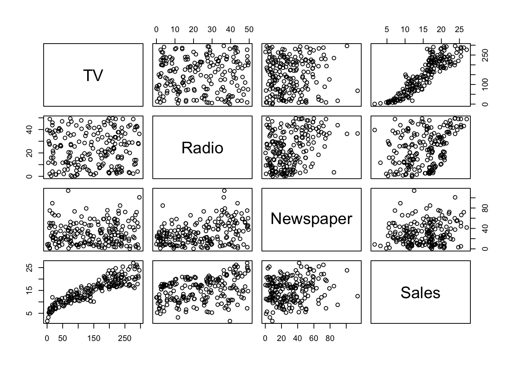
A pair-plot gives a bigger picture of the
cross correlations between variables.
The base R pairs() function can be tweaked (check ?pairs)
in order to draw other kind of information of interest.
## put histograms on the diagonal
panel_hist <- function(x, ...) {
usr <- par("usr")
par(usr = c(usr[1:2], 0, 1.5))
h <- hist(x, plot = FALSE)
breaks <- h$breaks
nb <- length(breaks)
y <- h$counts
y <- y / max(y)
rect(breaks[-nb], 0, breaks[-1], y, col = "cyan", ...)
}
## put (absolute) correlations on the upper panels,
## with size proportional to the correlations.
panel_cor <- function(x, y, digits = 2, prefix = "", cex_cor, ...) {
par(usr = c(0, 1, 0, 1))
r <- abs(cor(x, y))
txt <- format(c(r, 0.123456789), digits = digits)[1]
txt <- paste0(prefix, txt)
if (missing(cex_cor)) cex_cor <- 0.8 / strwidth(txt)
text(0.5, 0.5, txt, cex = cex_cor * r)
}
pairs(advertising,
upper.panel = panel_cor, diag.panel = panel_hist
)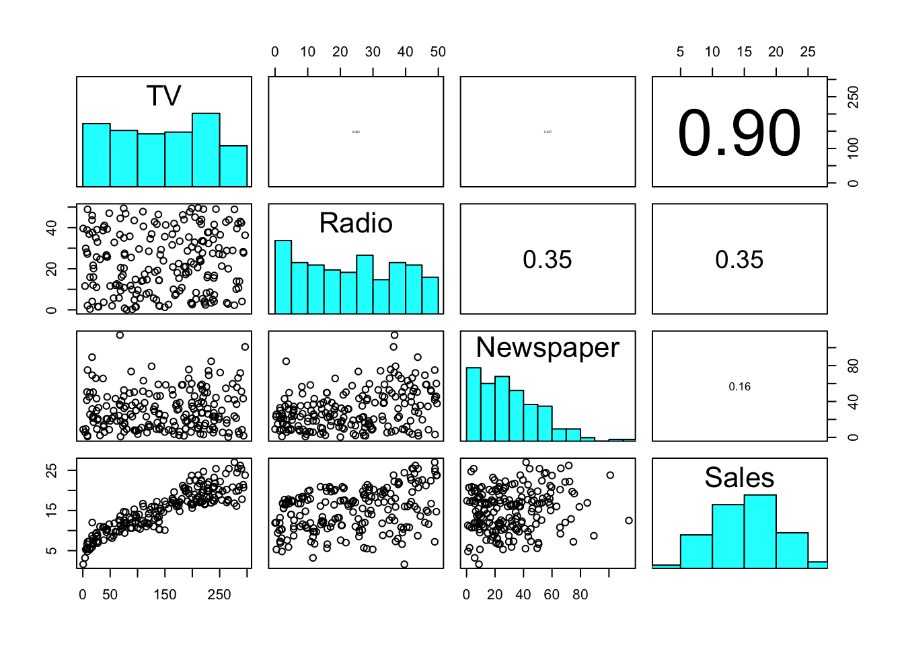
With much less effort, we can obtain a prettier version of the pair-plot.
library(GGally)## Registered S3 method overwritten by 'GGally':
## method from
## +.gg ggplot2ggpairs(advertising, progress = FALSE)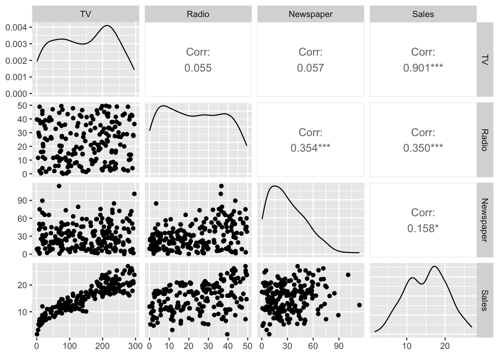
Again, with base R let’s plot the predictors against the response. We know how to do that with a single predictor.
plot(advertising$TV, advertising$Sales)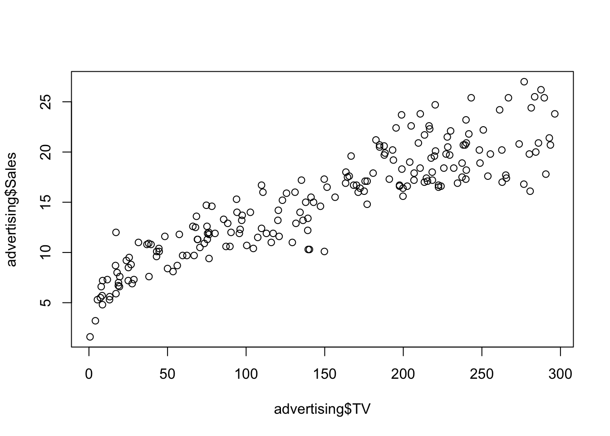
In case we want to add all plots to a single figure, we can do it as follow (base R)
# set plot parameters
with(advertising, {
par(mfrow = c(1, 3))
plot(TV, Sales)
plot(Radio, Sales)
plot(Newspaper, Sales)
})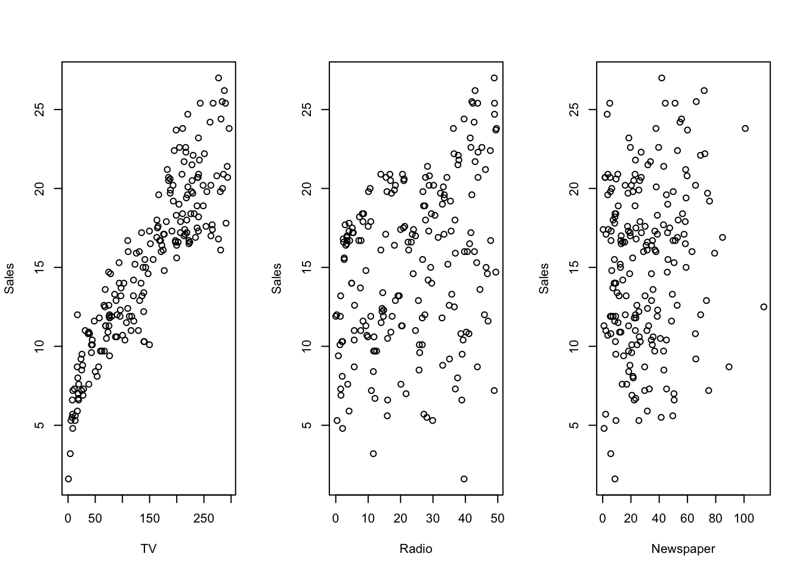
adding a smoothed line would look like this
# set plot parameters
with(advertising, {
par(mfrow = c(1, 3))
scatter.smooth(TV, Sales, col = "red")
scatter.smooth(Radio, Sales, col = "red")
scatter.smooth(Newspaper, Sales, col = "red", span = .3) # tweak with span
})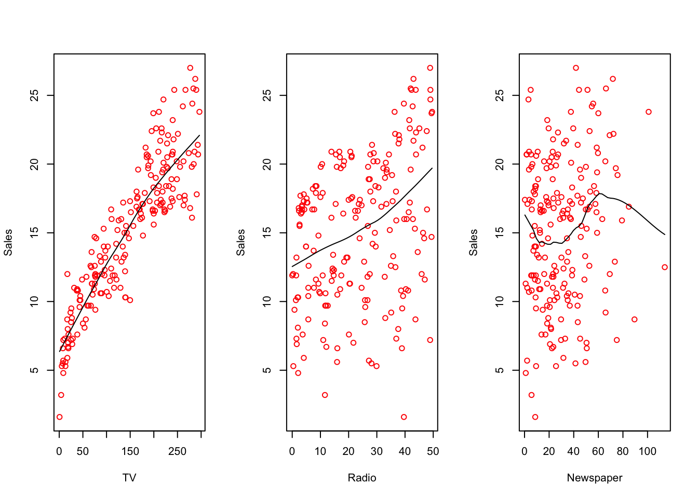
The same pictures can also be plotted with ggplot,
if preferred (in two ways).
library(ggplot2)
ggplot(advertising) +
geom_point(aes(TV, Sales))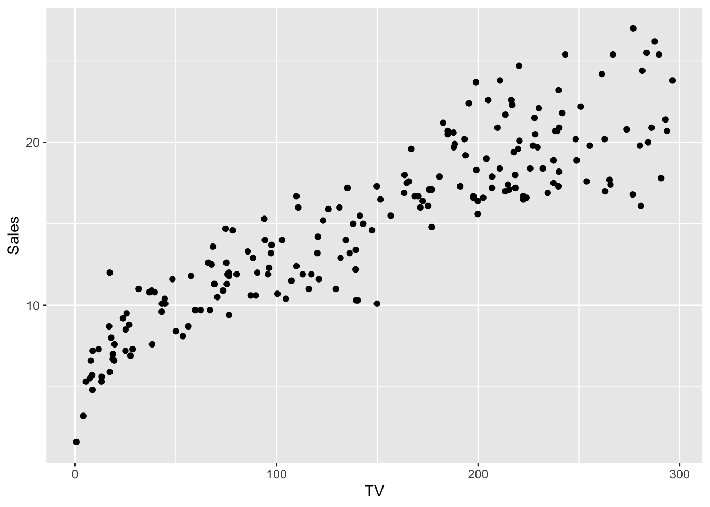
First method: draw three separate plots and arrange
them together with ggarrange()
library(ggpubr)
tvplt <- ggplot(advertising, mapping = aes(TV, Sales)) +
geom_point() +
geom_smooth()
radplt <- ggplot(advertising, mapping = aes(Radio, Sales)) +
geom_point() +
geom_smooth()
nwsplt <- ggplot(advertising, mapping = aes(Newspaper, Sales)) +
geom_point() +
geom_smooth()
ggarrange(tvplt, radplt, nwsplt,
ncol = 3
)## `geom_smooth()` using method = 'loess' and formula = 'y ~ x'
## `geom_smooth()` using method = 'loess' and formula = 'y ~ x'
## `geom_smooth()` using method = 'loess' and formula = 'y ~ x'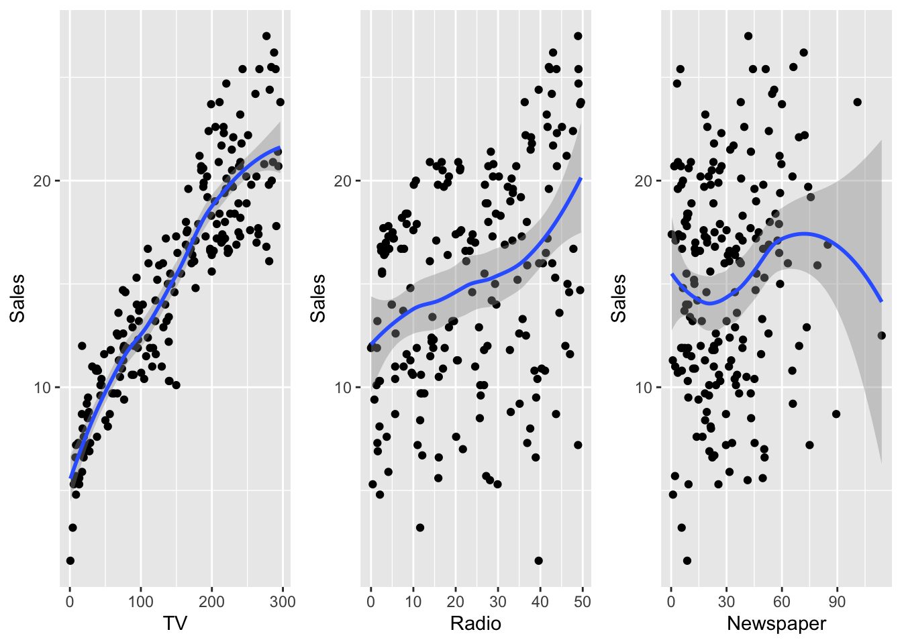
Second method: rearrange the dataset first, and feed everything to ggplot.
library(tibble)
## if using melt, need to switch to data.frame
# library(reshape2)
# advertising <- as.data.frame(advertising)
# long_adv <- melt(advertising, id.vars = "Sales")
long_adv <- advertising %>%
gather(channel, value, -Sales)
head(long_adv)## # A tibble: 6 × 3
## Sales channel value
## <dbl> <chr> <dbl>
## 1 22.1 TV 230.
## 2 10.4 TV 44.5
## 3 12 TV 17.2
## 4 16.5 TV 152.
## 5 17.9 TV 181.
## 6 7.2 TV 8.7ggplot(long_adv, aes(value, Sales)) +
geom_point() +
geom_smooth() +
facet_wrap(~channel, scales = "free")## `geom_smooth()` using method = 'loess' and formula = 'y ~ x'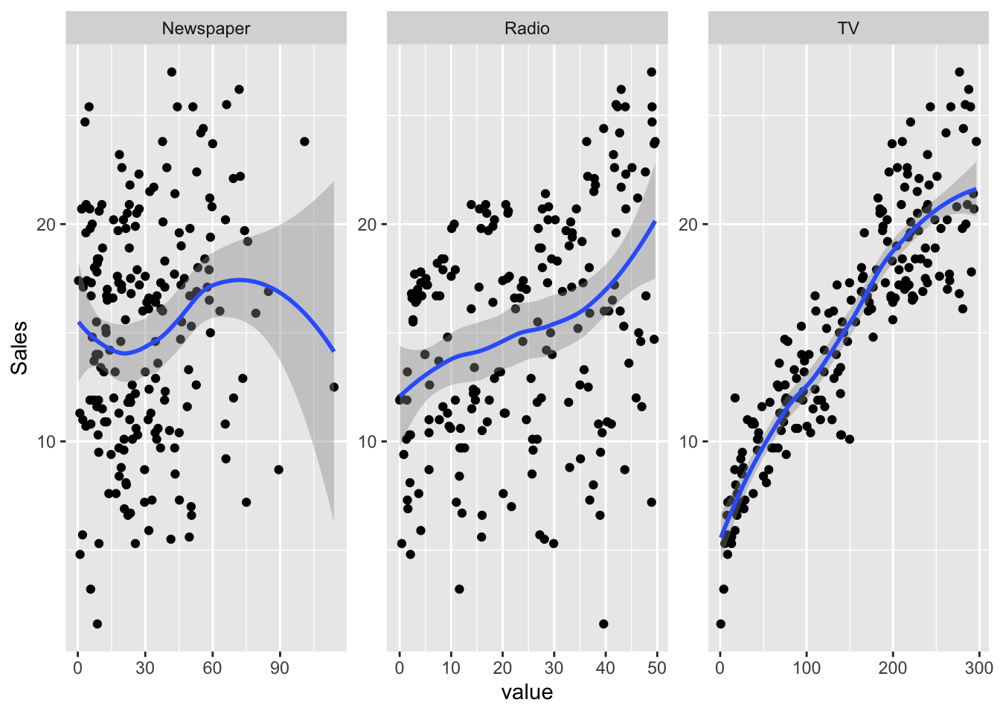
If you’re not sure why we need to use the melt() function,
check the first lab (Iris dataset), or simply read the ?melt
helper.
4.4 Simple regression
Check the lm() function: first argument is the formula.
Let’s fit a simple single predictor linear model
simple_reg <- lm(Sales ~ TV, data = advertising)Now that we fitted the model, we have access to the coefficient estimates and we can plot the regression line.
4.4.1 Plot
Here two ways of drawing the regression line, first in base R
with(data = advertising, {
plot(x = TV, y = Sales)
# abline draws a line from intercept and slope
abline(
simple_reg,
col = "red"
)
})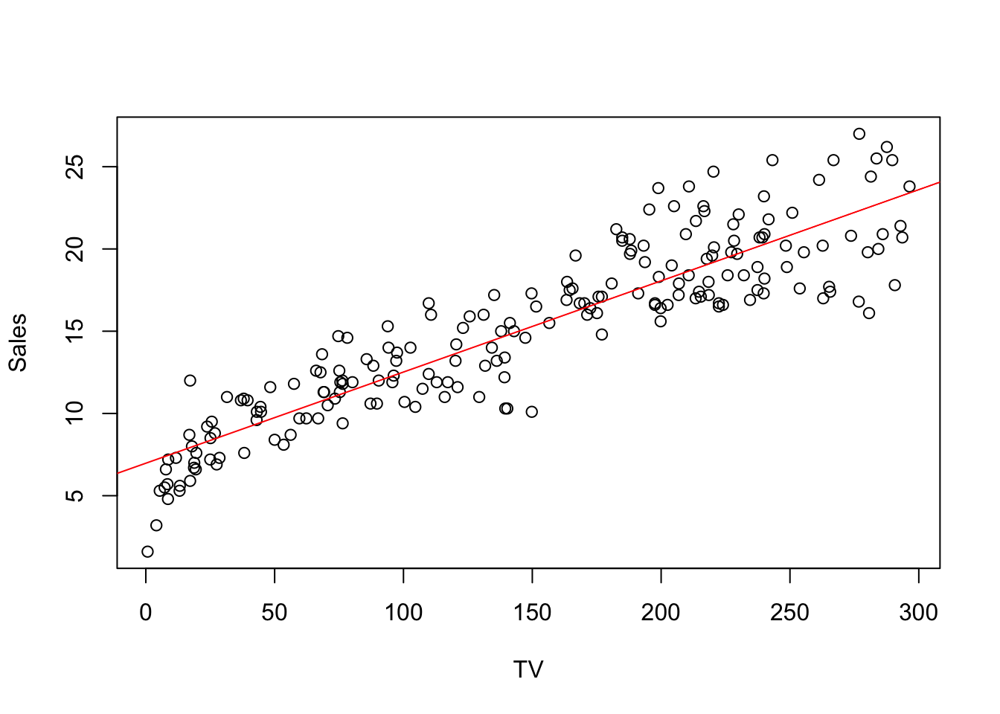
and in ggplot
ggplot(simple_reg, mapping = aes(TV, Sales)) +
geom_point() +
geom_smooth(method = "lm", color = "red")## `geom_smooth()` using formula = 'y ~ x'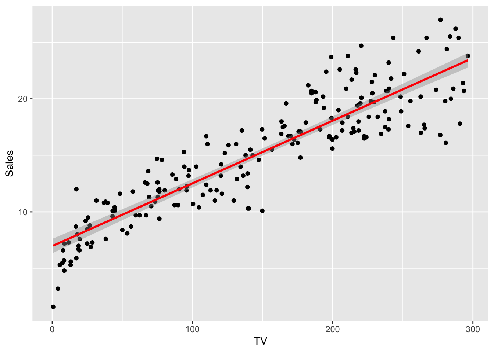
Actually, lm() does a lot more than just compute
the OLS coefficients.
summary(simple_reg)##
## Call:
## lm(formula = Sales ~ TV, data = advertising)
##
## Residuals:
## Min 1Q Median 3Q Max
## -6.4438 -1.4857 0.0218 1.5042 5.6932
##
## Coefficients:
## Estimate Std. Error t value Pr(>|t|)
## (Intercept) 6.974821 0.322553 21.62 <2e-16 ***
## TV 0.055465 0.001896 29.26 <2e-16 ***
## ---
## Signif. codes: 0 '***' 0.001 '**' 0.01 '*' 0.05 '.' 0.1 ' ' 1
##
## Residual standard error: 2.296 on 198 degrees of freedom
## Multiple R-squared: 0.8122, Adjusted R-squared: 0.8112
## F-statistic: 856.2 on 1 and 198 DF, p-value: < 2.2e-16We will analyze in detail this output in the next subsection.
4.4.2 Summary
What’s in summary(lm)?
residuals: \(Y - X\hat\beta\)
estimate: \(\hat\beta\)
std. error: errors on the coefficients \(S \sqrt{(X'X)^{-1}_{i+1,i+1}}\) because \(\frac{\hat\beta_i - \beta_i}{S\sqrt{(X'X)^{-1}}}\sim t(n-p)\)
t-value: value of the beta t-statistic under the null hypothesis (\(H_0: \beta_{i+1} = 0\))
p-value: probability of the test statistic being beyond t-val
residual std error: \(S = \sqrt{\frac{e'e}{n-p}}\)
multiple R squared: later
adj R squared: later
Let’s compute them to make sure we understood the concepts
4.4.2.1 Residuals
Easy to retrieve them (actually, they are the realization of the residuals)
\[ e = y - x\hat\beta \]
y <- advertising$Sales
x <- cbind(1, advertising$TV)
e <- y - x %*% simple_reg$coefficients
head(tibble(
lm_res = simple_reg$residuals,
manual_res = as.vector(e)
))## # A tibble: 6 × 2
## lm_res manual_res
## <dbl> <dbl>
## 1 2.36 2.36
## 2 0.957 0.957
## 3 4.07 4.07
## 4 1.12 1.12
## 5 0.897 0.897
## 6 -0.257 -0.2574.4.2.2 Estimate
Estimates are just the \(\hat\beta\) values for each predictor (plus intercept). They are computed with the closed form max likelihood formula.
\[ \hat\beta = (X'X)^{-1}X'Y \]
beta_hat <- solve(t(x) %*% x) %*% t(x) %*% y
head(tibble(
lm_coeff = simple_reg$coefficients,
manual_coeff = as.vector(beta_hat)
))## # A tibble: 2 × 2
## lm_coeff manual_coeff
## <dbl> <dbl>
## 1 6.97 6.97
## 2 0.0555 0.05554.4.2.3 Standard Error
For each predictor, this represent the variation in the beta estimator. The lower the standard error is, the higher is the accuracy of that particular coefficient. For predictor \(i\), it’s computed as
\[ SE_i = S \sqrt{(X'X)^{-1}_{i+1,i+1}} \]
where \(S\) is the residuals standard error (with \(S^2\) being the RMS - residual mean squares), we get the \(i+1^{\text{th}}\) element because of the \(1\) column for the intercept.
n <- nrow(x)
p <- ncol(x)
rms <- t(e) %*% e / (n - p)
# SE for TV
tv_se <- sqrt(rms * solve(t(x) %*% x)[2, 2])
tv_se## [,1]
## [1,] 0.0018955514.4.2.4 T-value and p-value
These two are related to each other. The first is the test statistics value, under the null hypothesis \(H_0 : \beta_i = 0\), for the variable
\[ \frac{\hat\beta_i - \beta_i}{S \sqrt{(X'X)^{-1}}} \]
which is student-T distributed with \(n-2\) degrees of freedom.
# for TV
t_val <- simple_reg$coefficients[2] / tv_se
t_val## [,1]
## [1,] 29.2605And finally, the p-value is simply the probability on a \(t(n-2)\) distribution of the statistic to be beyond that critical value. Remember that with beyond we mean on both sides of the distribution, since the alternative hypothesis \(H_1: \beta \neq 0\) is two-sided.
# multiply by two because the alternative hyp is two-sided
p_val <- 2 * pt(t_val, n - 2, lower.tail = FALSE)
p_val## [,1]
## [1,] 7.927912e-74Here we cannot appreciate the manual computation since the p-value is very low (meaning that we can reject the null, favoring the alternative).
Exercise: You can try and compute this value manually on another
simple regression model where we use Radio as predictor.
radio_simple_reg <- lm(Sales ~ Radio, data = advertising)
summary(radio_simple_reg)##
## Call:
## lm(formula = Sales ~ Radio, data = advertising)
##
## Residuals:
## Min 1Q Median 3Q Max
## -15.5632 -3.5293 0.6714 4.2504 8.6796
##
## Coefficients:
## Estimate Std. Error t value Pr(>|t|)
## (Intercept) 12.2357 0.6535 18.724 < 2e-16 ***
## Radio 0.1244 0.0237 5.251 3.88e-07 ***
## ---
## Signif. codes: 0 '***' 0.001 '**' 0.01 '*' 0.05 '.' 0.1 ' ' 1
##
## Residual standard error: 4.963 on 198 degrees of freedom
## Multiple R-squared: 0.1222, Adjusted R-squared: 0.1178
## F-statistic: 27.57 on 1 and 198 DF, p-value: 3.883e-07